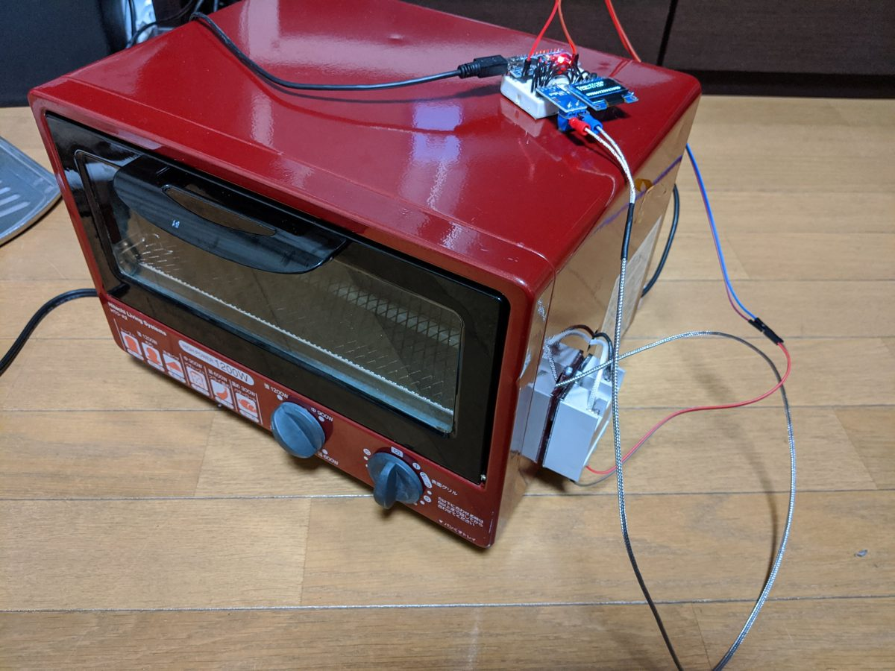
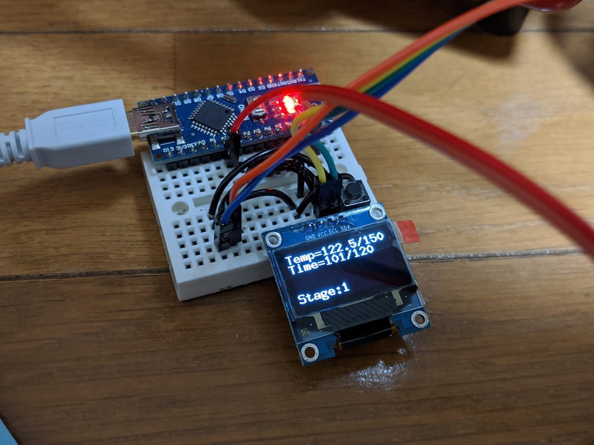
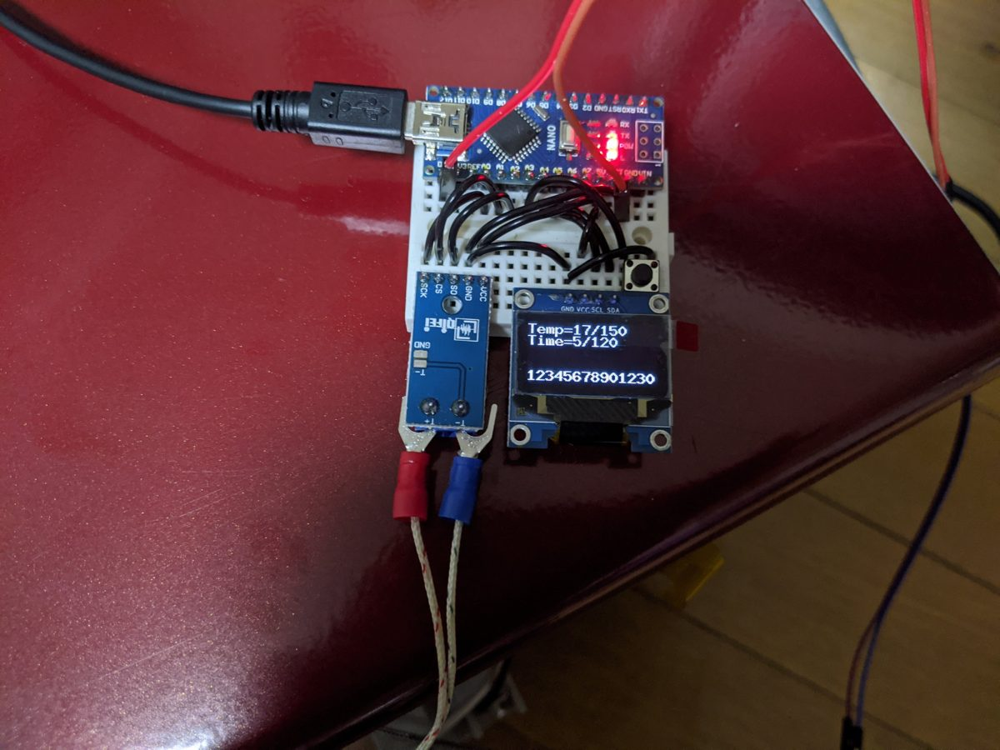

リフロー炉（自作）
リレーアタック防止装置の基板を試作するために、オーブントースターを改造して作ったリフロー炉です。
道具も自作します
基板に部品を載せて熱で一気にはんだ付けする装置がリフロー炉です。買うと高いので、日立のオーブントースターHTO-A2を改造して作りました。

制御まわり
Arduino Nanoと熱電対モジュールで温度を測り、OLEDに現在の温度と経過時間を表示します。温度プロファイルはステージ管理で、表示は「Temp=122.5/150、Time=101/120、Stage:1」のような形です。ヒーターの制御はSSRで行っています。

